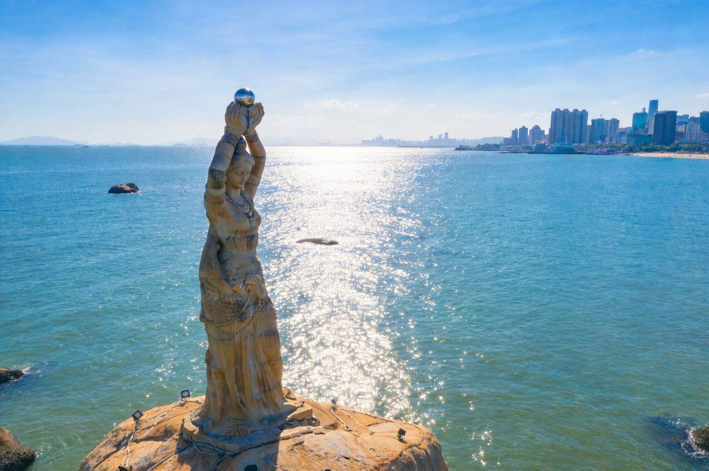
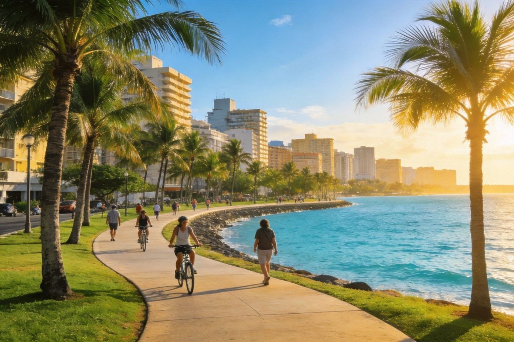
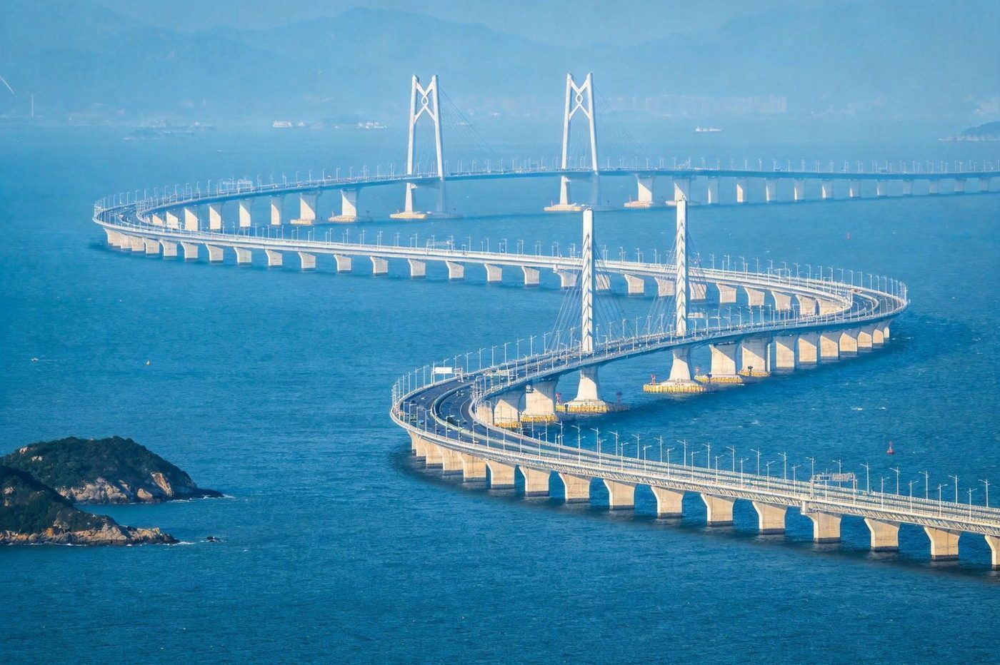
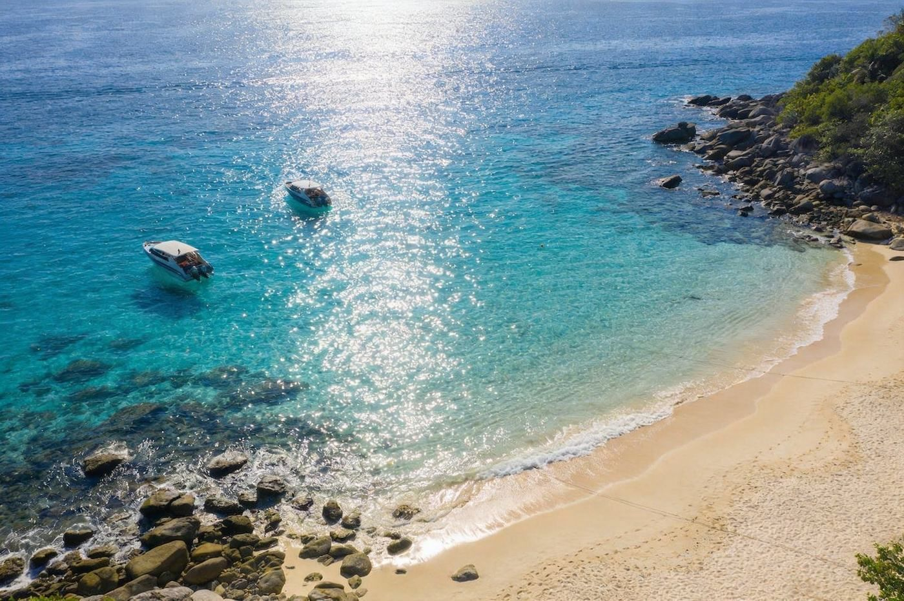

🏙️ 珠海 · ZHUHAI TRAVEL GUIDE
珠海三模式组合指南
一座浪漫的湾区海滨城：2 天经典 情侣路+渔女+市区；3 天加长 加一趟近海海岛或港澳珠大桥；4 天深度 玩转长隆海洋王国或东澳岛&外伶仃岛双海岛，还能顺路衔接澳门与香港。适合情侣、朋友与亲子。
📍 目的地：珠海
👥 情侣 / 朋友 / 亲子
⏱️ 经典2天 · 加长3天 · 深度4天
💰 人均预算已附
🏙️2 天 · 经典版（情侣路 + 渔女 + 市区）
珠海是一座「沿海而居、慢慢生活」的城市：两天走浪漫海滨长廊、打卡渔女与当地生活，节奏松弛不赶。
👥 情侣/朋友 1–2 人适配：市区景点集中在香洲，公交/骑行/打车便利；预算按 人均。
🗺️ 行程安排
-
DAY 1 · 情侣路海滨 + 渔女
🍃 上午 情侣路骑行/漫步（看海）🧜 中午 珠海渔女广场打卡
🏖️ 下午 海滨泳场/城市阳台看海🌃 晚上 香洲夜宵/海景晚餐
💡 情侣路沿海而建、view 极好，建议傍晚骑行看日落；渔女是珠海地标雕塑，合影必到。
-
DAY 2 · 本地生活 + 收尾
🏛️ 上午 逛北山/会同古村 或 圆明新园🛍️ 中午 市区觅食
☕ 下午 咖啡/海滨咖啡 或 免税逛买 → 返程
⚠️ 时间紧可选其一；想看中西建筑建议北山古村（近长隆），想复古园林去圆明新园。
🏖️3 天 · 加长版（经典 + 近海海岛 / 港澳珠大桥）
在两天经典的基础上多留一天：清爽找一个近海岛屿（东澳岛/外伶仃岛）或登高看一眼港澳珠大桥的壮阔。
👥 适配：东澳岛、外伶仃岛是珠海热门近海岛，船程短、岛上海滩干净；看港澳珠大桥可走观光或海上看。预算按 人均，含往返船票。
🗺️ 行程安排
-
DAY 1 · 情侣路 + 渔女
🍃 上午 情侣路骑行 → 🧜 中午 渔女 → 晚上 市区夜宵
📌 同经典版 DAY1，先走完海滨精华。
-
DAY 2 · 近海海岛（东澳岛 / 外伶仃岛）
⛴️ 上午 客船登岛（约1h）🏖️ 下午 岛上海滩游泳/环岛
🌇 傍晚 岛上日落 → 傍晚/次日一早返程
💡 东澳岛沙滩+灯塔，外伶仃岛更原生态；快船可从香洲/九洲码头出发，旺季提前订往返船票。
-
DAY 3 · 收尾（港澳珠大桥观光 或 古村）
🌉 上午 看港澳珠大桥（岸边/观光）🏛️ 下午 北山/会同古村 或 圆明新园 → 返程
⚠️ 港澳珠大桥观光可走港珠澳大桥珠海口岸周边或乘海上观光；行程紧可二选一。
🐳4 天 · 深度版（长隆海洋王国 或 双海岛）
珠海玩得更有分量：可选一整天神游「长隆海洋王国」，或把东澳岛+外伶仃岛两个近海小岛都走一遍。
👥 深度适配：长隆海洋王国在横琴（世界级海洋主题乐园，含鲸鲨馆/剧场/烟花夜秀），亲子或海洋控首选；双海岛适合想看透海洋与慢生活的人。预算含门票或往返船票，按 人均。
🗺️ 行程安排
-
DAY 1 · 情侣路 + 渔女
🍃 情侣路 → 🧜 渔女 → 市区
📌 先走海滨经典开场。
-
DAY 2 · 长隆海洋王国（横琴）一整天
🐋 上午 鲸鲨馆+剧场🎢 下午 过山车+海洋大巡游
🌃 晚上 烟花/海洋夜秀
🏡 想看透建议住横琴：长隆企鹅酒店离园区最近、可提前入园；不想住可住横琴周边，打车十几分钟到。详见《珠海长隆全攻略》。
-
DAY 3 · 近海海岛（东澳岛 / 外伶仃岛）
⛴️ 上午 客船登岛🏖️ 下午 环岛/海滩/游泳
🏡 晚上 岛上民宿或当晚返市区（不紧凑可选）
💡 走双海岛版：DAY3 登东澳岛住1晚、DAY4 上午外伶仃岛傍晚返程；请提前订往返船票与岛上住所。
-
DAY 4 · 收尾 · 可选衔接澳门
🏛️ 上午 北山/圆明新园 或 港澳珠大桥观光🛍️ 下午 市区买毕 → 返程 / 顺路过澳门
🎫 珠海市区离澳门拱北/青茂口岸近，若想顺路，可安排半天到澳门打卡大三巴（见《澳门一日玩法》）。
⭐特色亮点 · 单独详览
把珠海最有辨识度的几个点单独拎出来看图讲清楚。

珠海渔女 · 城市象征
市区 · 地标
珠海渔女 · 捧珠而立的城市象征
矗立于海滨的雕塑「珠海渔女」，手捧珍珠面向海湾，是珠海最具代表性的城市地标，寄托着这座滨海城市「渔歌与希望」的意象。
👍 必去理由：珠海打卡第一名。广场免费、可近距离合影，和情侣路顺路，清晨/傍晚人少光线好。
配图：原创生成 · 无版权风险

情侣路 · 沿海浪漫步道
市区 · 观海
情侣路 · 环海而行的浪漫长廊
沿珠海海岸线延伸的海滨步道，一侧碧海、一侧城景，沿途椰树草坪。骑行或漫步，能一路看海、看跨海大桥、看日落。
👍 必去理由：看珠海海岸线最舒服的方式。免费可骑行，建议傍晚走一段看日落；可从渔女一路骑到城市阳台/珠海大剧院（日月贝）。
配图：原创生成 · 无版权风险

港珠澳大桥 · 伶仃洋巨龙
湾区 · 超级工程
港珠澳大桥 · 世界级跨海工程
连接珠海、香港与澳门的跨海大桥，白色桥身在珠海的伶仃洋上蜿蜒，是世界级的桥梁奇迹，也是大湾区的地标。
👍 必去理由：看「一国、三地、一桥」的壮阔。可走珠澳口岸周边岸边远眺，或选海上观光/乘车过桥体验；天气通透时最壮观。
配图：原创生成 · 无版权风险

近海海岛 · 东澳/外伶仃
海岛 · 度假
东澳岛 · 外伶仃岛 · 近海小岛
搭船一两小时就能到的两座近海小岛：东澳岛有细腻沙滩与灯塔，外伶仃岛更新原生态。海清滩净，能游泳、环岛、看日出。
👍 必去理由：不想跑远也想踏进海岛就来。往返船票+岛上简单用餐，一日或住一晚都行；旺季船票与民宿要提前订。
配图：原创生成 · 无版权风险
圆明新园 · 皇家园林
市区 · 复古园林
圆明新园 · 仿皇家园林
按圆明园部分景致仿建的园林，中式宫阙、琉璃瓦与楼阁水榭，适合拍复古皇家feel的照片，也适合本地人散心。
👍 必去理由：想逛中式园林/拍古风照可选。园林面积不小，含门票，适合慢慢逛；对园林无感可略过或换北山古村。
配图：原创生成 · 无版权风险
北山/会同 · 岭南古村
乡野 · 古村
北山 / 会同 · 岭南古村与碉楼
保存完好的岭南古村落，青砖灰瓦与高耸碉楼交织，是珠海少有的人文静地。近年老屋改造成咖啡馆与艺术空间，适合慢逛拍照。
👍 必去理由：想看不拥堵的岭南生活就逛古村。免费、可走半日；北山村离市区/长隆近，会同村更乡野，二选一即可。
配图：原创生成 · 无版权风险
🏨住宿推荐
市区+横琴+海岛三处覆盖，2 人房计，多人按需调整。
市区经济
香洲/拱北酒店或民宿
约 150–350 元/晚 · 人均 75–175
离情侣路与拱北口岸近，2 天经典性价比之选。
市区/海边中端
海景酒店 / 度假公寓
约 300–700 元/晚 · 人均 150–350
一线海景看日落；3 天加长版住着舒服。
横琴（长隆）
长隆主题酒店 / 横琴周边
企鹅酒店约 800+；横琴周边 300–600
长隆海洋王国首选住横琴：主题酒店近可提前入园，周边民宿更省，打车十几分钟。
海岛
东澳岛/外伶仃岛民宿
约 150–400 元/晚 · 人均 75–200
登岛住1晚看日出、听海浪；旺季船票+民宿需提前订。
🍜珠海必吃清单
生猛海鲜 + 粤式茶点 + 湾区融合味，丰俭由人。
1海鲜排档加工现点 · 生猛海产（濑尿虾/闸一螺/虾）
人均 60–120
2广式早茶（一盅两件）虾饺/肠粉/蒸凤爪 · 地人茶楼
人均 40–80
🍜 想探粤式手工，可抽空去北山/会同古村的cafe与糖水铺；或澳门一日游玩到地道葡式与澳味（见 bonus 页）。
💰预算对比（人均）
区间为保守–宽松参考，长隆门票与海岛船票浮动明显。
人均预算（含大交通参考）
| 项目 | 2天经典 | 3天加长 | 4天深度 |
|---|
| 大交通（往返） | 100–300 | 100–300 | 150–350 |
|---|
| 住宿 | 1 晚 75–175 | 2 晚 150–450 | 3 晚 250–800 |
|---|
| 餐饮 | 80–140 | 130–230 | 220–380 |
|---|
| 长隆门票 / 海岛船票 | — | 200–380（海岛） | 400–700（长隆） |
|---|
| 景点/市内 | 20–60 | 40–90 | 80–160 |
|---|
| 合计 · 人均 | 约 300–550 | 约 500–900 | 约 900–1600 |
|---|
💡 省钱建议：珠海物价亲民；长隆门票建议提前网上订，旺季与海岛船票务必提前；市区骑行/公交+少量打车；住横琴周边比长隆主题酒店省很多。